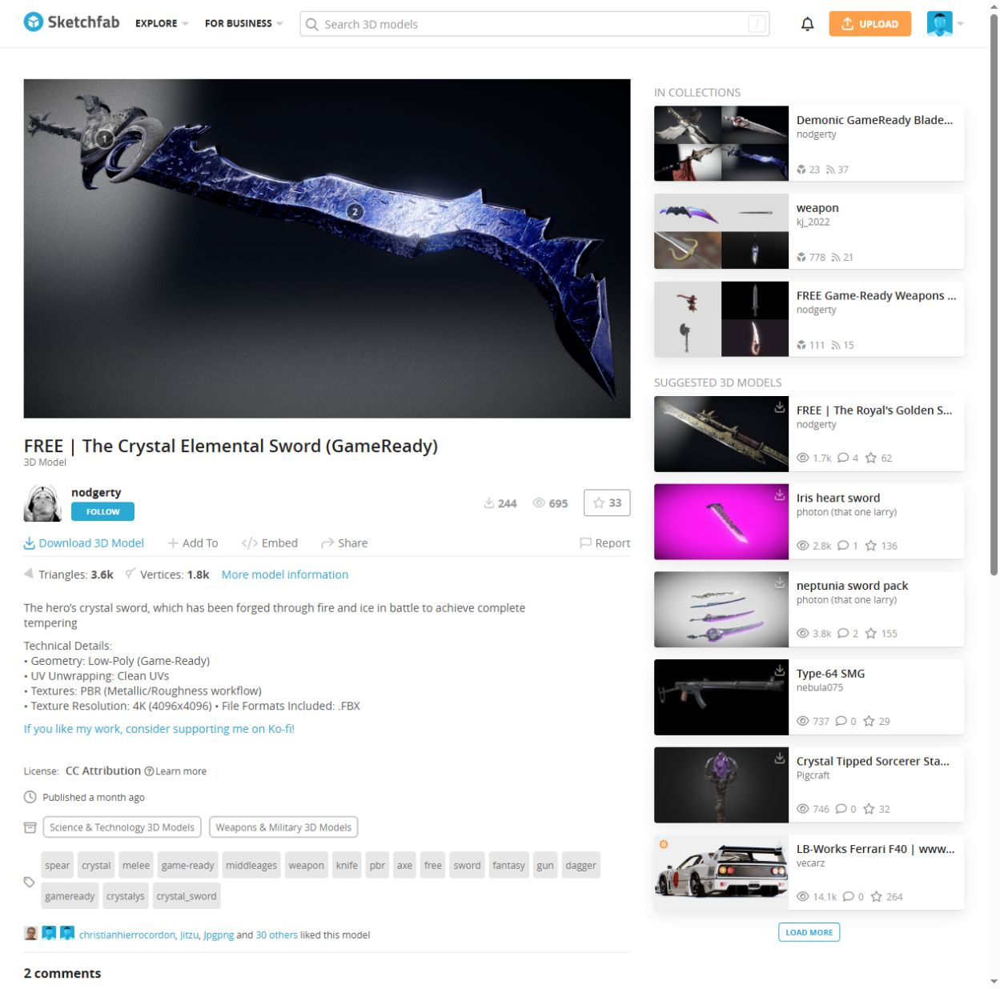
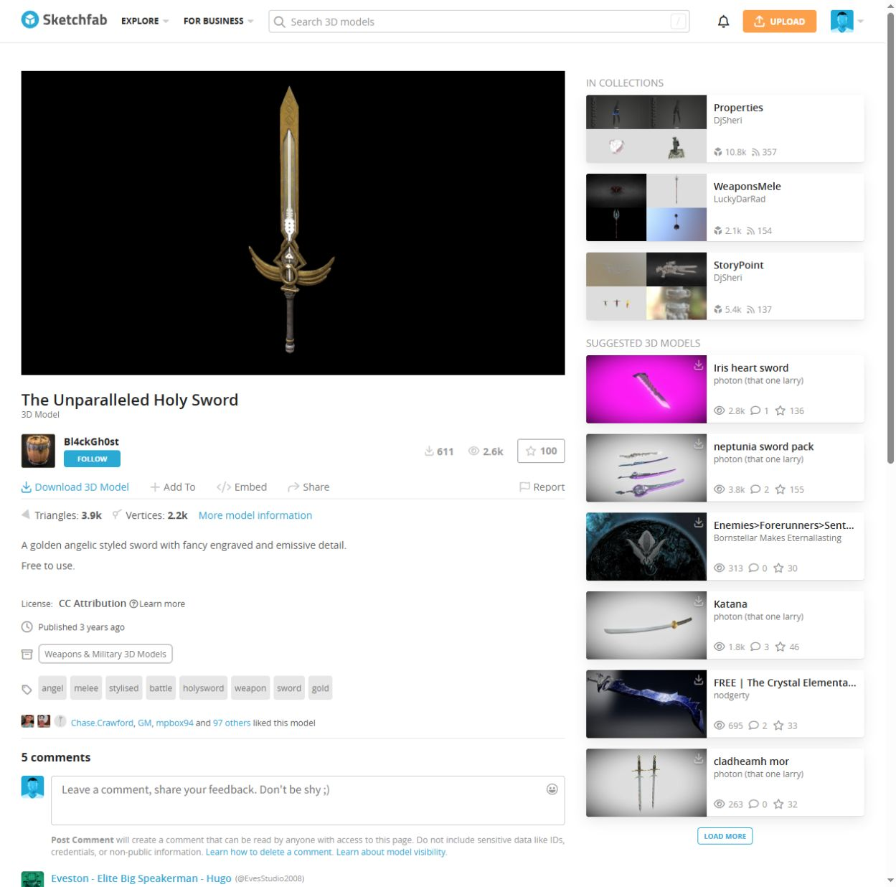

← 返回 demo 首页Paladin · 角色视频评审
2026 年 11 月 3 日更新 · 1080p 网页视频。每段都可单独打开、全屏播放；静帧可放大查看。长片为网页压缩版，原始渲染文件保留。
Sovereign 造型已定型。 Lightblade 正在升级整套着装，并围绕蓝色晶刃、金色圣剑做搭配；下方 A / B 视频保留为服装升级前参考。
Lightblade · 着装升级
第一版实际换装：保留原脸与原动作，试穿现有专业服装。当前绿金双剑暂作轮廓参照，尚未换成下方的蓝色晶刃或金色圣剑。服装仍是候选。
Lightblade · 新着装第一版
1.3 秒 · 原脸与原招式 · 黑红衣料、非对称护甲 · 双剑暂作参照
双剑造型对比
A、B 使用相同角色、服装和动作。先比较剑型与装饰；两套都保留，尚未锁定最终造型。
A · 绿金雕纹双剑
1.3 秒 · 无声外观小样 · 候选
B · 红金细刃双剑
1.3 秒 · 无声外观小样 · 候选
绿金双剑 · 实战与动态
服装升级前的 A 候选。可分别查看真实战斗、闪避和攻击动作。
A · 双剑实战修正版
6.5 秒 · 四次真实命中 · 两类敌人 · 刀刃血迹淡出
A · 闪避与攻击动作
9.4 秒 · 侧移、反击、转身、空中斩 · 带音效
角色与战斗更新
Champion 的攻击、不同受击反应与处决，以及已定型的 Sovereign。
Champion · 一对多三轮战斗
19.5 秒 · 横扫、连招、收尾击杀 · 不同受击与倒地姿态
Champion · 处决演示
7.7 秒 · 头盔敌人 · 命中与死亡音效
Sovereign · 最新近战修正版
3 秒 · 当前无遮眼造型 · 减弱命中闪光
Sovereign · 当前造型近景
2.8 秒 · 原脸、发型和白黑盔甲 · 自然眨眼
Sovereign · 表情小样
3 秒 · 无声表情候选
完整招式参考
Seraph 保留已认可版本。Sovereign 完整片为此前版本，最新面部和闪光改动请对照上面的短片。
Sovereign · 八招完整参考
65 秒 · 此前完整招式版；面部与闪光更新见上方短片
Seraph · 火焰宽剑完整演示
35 秒 · 已认可的 S7B 造型与火焰剑
新资源 · 作者预览
以下是作者页面预览，尚未作为角色的 UE 佩戴成品。可打开原图和作者的 3D 页面比较。
资源候选 C · 尚未导入蓝色晶体弯刃

Crystal Elemental Sword · nodgerty · CC BY 4.0
资源候选 D · 待获取模型金色翼形护手圣剑

The Unparalleled Holy Sword · Bl4ckGh0st · CC BY 4.0
反馈时可直接说 A、B、C、D，或告诉我哪一段视频需要修改。Original Sovereign 的完整原型复刻尚未完成。